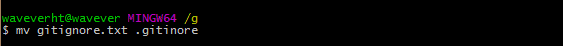
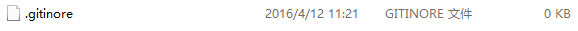

☰ 目录
20180524 git配置gitignore 文件
常用的就是
# 忽略当前目录下的build/ 文件夹
build/
# mac 下面会有这个很难搞的问价
*.DS_Store
原文：https://www.jianshu.com/p/ea6341224e89
在日常的开发中，当我们需要将一个项目提交到Git时，并不是所有的文件都需要提交，比如一些自动生成的文件，这时候就可以使用.gitignore来忽略一些不需要提交的文件，本文着重介绍一下.gitignore的配置语法。
创建
以Android开发为例，Android Studio默认会生成一个.gitignore文件，而当使用Eclipse时，我们需要在提交Git之前，需要自己创建一个.gitignore文件，由于Windows下创建文件必须键入文件名，而要创建的.gitignore是没有文件名的，所以我们可以使用move命令来实现，打开Git Bash ，使用mv gitignore .gitignore，然后可以编辑器编辑这个文件。


生成的.gitgnore
语法规范
-
空行或是以#开头的行即注释行将被忽略。
-
可以在前面添加正斜杠/来避免递归,下面的例子中可以很明白的看出来与下一条的区别。
-
可以在后面添加正斜杠/来忽略文件夹，例如build/即忽略build文件夹。
-
可以使用!来否定忽略，即比如在前面用了*.apk，然后使用!a.apk，则这个a.apk不会被忽略。
-
*用来匹配零个或多个字符，如*.[oa]忽略所有以".o"或".a"结尾，
*~忽略所有以~结尾的文件（这种文件通常被许多编辑器标记为临时文件）；
[]用来匹配括号内的任一字符，如[abc]，也可以在括号内加连接符，如[0-9]匹配0至9的数；
?用来匹配单个字符。
看了这么多，还是应该来个栗子：
# 忽略 .a 文件
*.a
# 但否定忽略 lib.a, 尽管已经在前面忽略了 .a 文件
!lib.a
# 仅在当前目录下忽略 TODO 文件， 但不包括子目录下的 subdir/TODO
/TODO
# 忽略 build/ 文件夹下的所有文件
build/
# 忽略 doc/notes.txt, 不包括 doc/server/arch.txt
doc/*.txt
# 忽略所有的 .pdf 文件 在 doc/ directory 下的
doc/**/*.pdf
Github给出的Android开发中使用的.gitignore模板
# Built application files
*.apk
*.ap_
# Files for the Dalvik VM
*.dex
# Java class files
*.class
# Generated files
bin/
gen/
out/
# Gradle files
.gradle/
build/
# Local configuration file (sdk path, etc)
local.properties
# Proguard folder generated by Eclipse
proguard/
# Log Files
*.log
# Android Studio Navigation editor temp files
.navigation/
# Android Studio captures folder
captures/
# Intellij
*.iml
# Keystore files
*.jks
参考
另外的参考：https://blog.csdn.net/u011475134/article/details/71521725
gitignore collection on github
The Ignoring Files chapter of the Pro Git book.